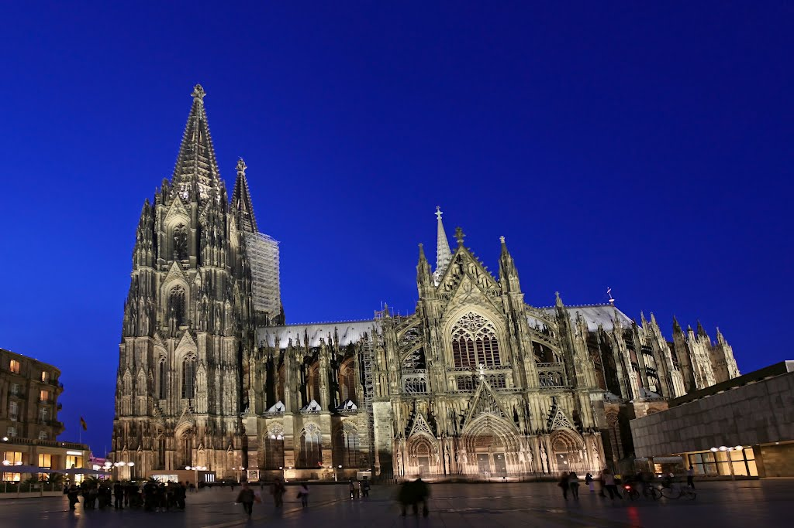
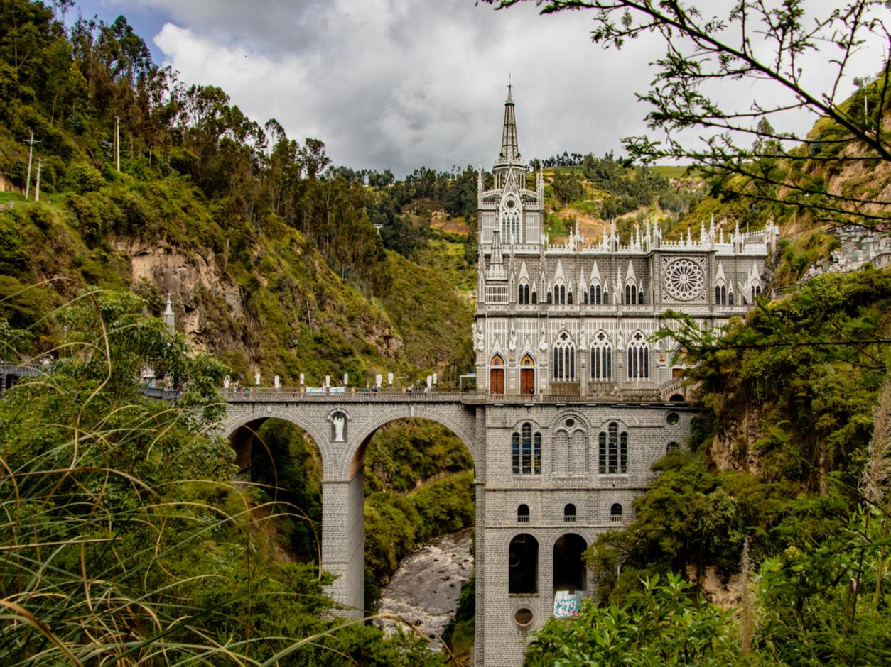

| Katedral Köln | ||
|  |
Gereja Katedral Santo Petrus Cologne atau yang lebih dikenal dengan nama Katedral Cologne merupakan gereja Katolik Roma yang terletak di jantung kota Cologne (Koln), Jerman. Berada di sisi sungai Rhine yang terkenal, Katedral Cologne telihat sangat megah dengan konstruksi bangunan besarnya dan kedua menara gerejanya yang menjulang tinggi. Cologne merupakan salah satu katedral bersejarah di dunia dengan mahakarya arsitektur gotik, sebuah aliran arsitektur yang berasal dari Eropa pada pertengahan abad ke-12 hingga ke-16. Sejarah pembangunannya tidak terlepas dari persemayaman Tiga Raja. Pada 1146, Uskup Koln Rainald of Dassel menerima relik suci sisa-sisa tulang dan pakaian Tiga Raja dari Kaisar Suci Roma Frederick Barbarossa. Untuk itu, sebuah tempat yang layak harus dibangun untuk tempat peristirahatan terakhir mereka. Katedral Koln pun dibangun pada 1248 dan rampung 1880, enam abad kemudian. Relik suci Tiga Raja terletak di belakang altar utama katedral atau di bagian kepala dari denah ruangan berbentuk salib ini. Di bagian ini terdapat jejeran setengah lingkaran, makam para kardinal dan uskup terdahulu. Relik suci Tiga Raja mendapatkan tempat khusus di tengah dan paling tinggi berupa sebuah peti dari emas, dihias perak dan batu-batu mulia. Untuk melindungi relik suci ini dibuatkan penutup kaca. Cahaya lampu memantulkan kemilau emas relik suci ini. Katedral Cologne ditetapkan menjadi salah satu situs warisan dunia oleh UNESCO pada tahun 1996. Dilansir UNESCO, setidaknya ada sejumlah faktor yang menjadikan katedral ini sebagai situs warisan dunia, di antaranya Katedral Cologne merupakan karya rancang bangun manusia yang kreatif dan jenius. Katedral Cologne juga dinilai sebagai kesaksian yang kuat tentang keyakinan Kristen di Eropa pada abad pertengahan dan masa modern. Sebagai bangunan bersejarah yang juga dikenal sebagai salah satu situs warisan dunia, Katedral Cologne banyak sekali menarik minat wisatawan dan umat peziarah. Sejumlah informasi menyebutkan sebelum masa pandemik diperkirakan sekitar 20 ribu orang mengunjungi salah satu landmark paling terkenal di Jerman ini per harinya. Pesona nilai sejarah dan kemegahan sejumlah bangunan katedral berasiktektur gotik di seluruh penjuru Eropa banyak menarik minat para wisatawan dan peziarah untuk datang mengunjunginya. Bangunan katedral yang menjulang tinggi seolah menyentuh langit dan tetap bertahan berjalan melintasi abad melalui sejumlah bencana dan peperangan yang pernah terjadi. Hal ini seolah menjadikan katedral-katedral yang masih berdiri tersebut sebagai sebuah simbol agung keabadian dan keyakinan iman. |
|
| Blue Mosque | ||
|
Masjid Biru (Blue Mosque) atau Masjid Sultan Ahmed merupakan masjid yang berada di Istanbul, kota terbesar di Turki. Masjid ini dibangun antara tahun 1609 dan 1616 atas perintah Sultan Ahmed I yang kemudian namanya dijadikan nama masjid tersebut. Beliau dimakamkan di halaman masjid. Letak masjid biru ini cukup dekat dengan Istana Topkapi, tempat kediaman para Sultan Utsmaniyah sampai tahun 1853 dan tidak jauh dari selat Bosphorus. Masjid ini dikenal dengan nama Masjid Biru, hal itu karena interiornya dilapisi oleh lebih dari 20.000 ubin Iznik buatan tangan yang memesona. Ubin itu terbuat dari keramik yang berwarna pirus dengan desain tulip merah. Selain itu, lantai dua masjid juga dicat biru dengan cahaya matahari yang masuk melalui lebih dari 200 jendela kaca patri. Awal pendirian masjid ini dimulai dari Perjanjian Damai Zsivatorok yang mengakhiri perang lima belas tahun antara Kekaisaran Ottoman dan Kerajaan Habsburg). Setelah perjanjian itu, Kekaisaran Ottoman mengalami kekalahan saat berperang dengan Persia tahun 1603-1618. Guna mengangkat kembali moral Kekaisaran Ottoman, Sultan Ahmed I membangun Masjid Sultan Ahmed pada tahun 1609 dan selesai pada 1616. Pembangunan masjid ini dimaksudkan untuk menegaskan kembali kekuasaan Kekaisaran Ottoman. Arsitektur masjid ini begitu megah. Terdapat lima kubah utama, enam menara, dan delapan kubah sekunder. Arsitektur megah ini pun dianggap sebagai masjir terbesar terakhir pada periode klasik. Arsitek Masjid Biru, Sedefkâr Mehmed Aga menggabungkan elemen arsitektur Islam tradisional dan Kristen Bizantium untuk mewujudkan bangunan masjid yang begitu megah ini. Bagian dalam masjid dihiasi oleh lantai biru yang datang dari Iznik, kota yang terletak sekitar 90 km dari tenggara Istanbul. Jumlah lantai biru yang digunakan dalam masjid tersebut adalah 21.043. Lantai bawah masjid tersebut dihiasi oleh lantai dengan desain tradisional seperti bunga. Sementara hal yang paling mendominasi pada lantai atas masjid adalah lebih dari 200 kaca patri dengan desain unik. Ayat-ayat Al Quran menghiasi bagian dalam masjid tersebut. Banyak dari mereka dibuat oleh seorang kaligrafi terhebat pada masa itu, Seyyid Kasim Gubari. |
||
| Las Lajas Sanctuary | ||
 |
 |
Las Lajas Sanctuary merupakan salah satu bangunan yang dapat dikatakan sebagai sesuatu ‘keajaiban’ yang berada di Kolombia. Bangunan ini terletak di perbatasan Kolombia dan Ekuador, dekat kota Ipiales. “Laja” mengacu pada jenis batu yang terbentuk di dalam perairan. Meskipun terlihat seperti kastel, bangunan ini sebenarnya merupakan gereja Gotik. Gereja ini dibangun di ngarai sungai. Penyelesaian pembangunan gereja ini membutuhkan hampir 33 tahun dimulai pada tahun 1916. Berdasarkan legenda yang berasal dari tahun 1745, terdapat suatu peristiwa ajaib terjadi di lokasi ini. Hal tersebutlah yang menjelaskan mengapa gereja ini dibangun di suatu tempat yang tidak biasa. Legenda menyatakan bahwa suatu hari terdapat seorang wanita bernama Maria dengan putrinya yang bernama Rosa. Rosa yang tuli dan tidak dapat berbicara sedang berjalan di samping Sungai Guaitara saat terjadi badai yang dahsyat. Mereka pergi ke arah bebatuan untuk mencari tempat berlindung. Akan tetapi, Rosa yang bisu dan tuli tiba-tiba berteriak dan menunjuk ke arah batu vertikal yang besar. Ketika sang ibu melihat, ia melihat gambar Perawan Maria di atasnya. Ia percaya bahwa Perawan Maria telah menyembuhkan Rosa. Rumor tentang keajaiban yang dialami Maria dan Rosa telah menyebar ke seluruh wilayah. Orang-orang sempat bertanya-tanya apakah hal tersebut benar-benar terjadi atau tidak. Akan tetapi, seorang lelaki buta sangat mempercayai keajaiban tersebut. Ia lalu meminta orang-orang untuk membantunya membangun tempat suci di lokasi Perawan Maria muncul. Oleh sebab itu, beberapa tahun kemudian, kuil pertama berhasil dibangun dan terjadi keajaiban lainnya. Pria buta tersebut kembali dapat melihat. Lima puluh tahun kemudian, para pengunjung gereja membangun jembatan yang mengarah ke gereja tersebut pada tahun 1802. Kuil yang semula dibangun pada abad ke-18 tersebut digantikan oleh katedral neo-gotic. Katedral tersebut berdiri diujung jembatan sepanjang 50 meter di tengah ngarai sungai Guaitara. Katedral tersebut berdiri menghadap batu ngarai yang terjun. Pada bagian dalam, dindingnya ditutup dengan garis-garis emas yang menghubungkan engsel langit-langit bundar tempat lampu gantung indah berada. Sedangkan dinding belakang gereja sebenarnya merupakan sebuah batu tempat Rosa melihat Perawan Maria. Gambar Perawan Maria tersebut masih ada di sana, namun tidak ada yang tahu siapa yang membuatnya. |